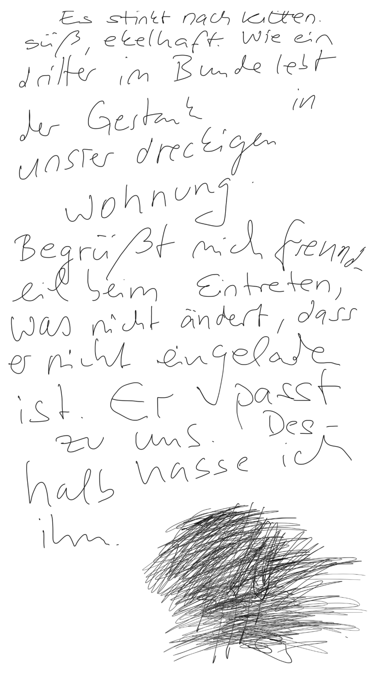
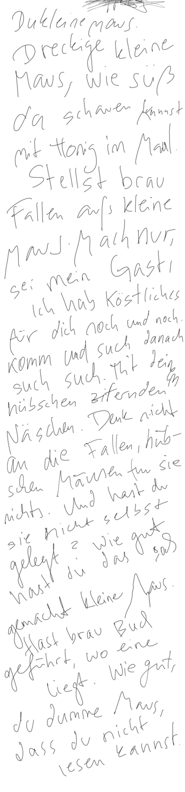
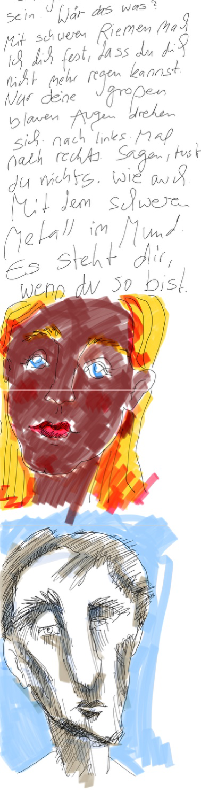
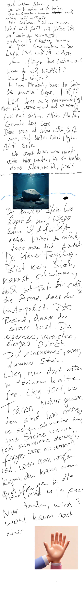

Blauer Vogel, tauber Vogel,
verbrauchter Vogel, zerstaubter Vogel,
beraubter Vogel.
Gib das Träumen auf.
Niemals wirst du fliegen, Vogel.
Niemals wirst du frei.
Niemals wirst du fliegen, Vogel.
Niemals wirst du frei.
Texte · Fragmente & Sammlungen
Gedichte, Prosa und Notizen. Mich interessiert das phänomenologische Schreiben — das präzise Beschreiben innerer Zustände.
Gedichte · 2023
Blauer Vogel, tauber Vogel,
verbrauchter Vogel, zerstaubter Vogel,
beraubter Vogel.
Gib das Träumen auf.
Niemals wirst du fliegen, Vogel.
Niemals wirst du frei.
Niemals wirst du fliegen, Vogel.
Niemals wirst du frei.
Dann bekamst du immer dieses ängstliche Flackern
in deinen warmen Augen.
Bis heute muss ich deshalb weinen.
Habe versucht, alles richtig zu machen,
um am Ende der Gute zu sein,
um mir nichts vorwerfen zu müssen.
Und doch bin ich schuldig.
Schäme mich, wer ich vor dir war.
Ich wollte es richtig machen.
Ich wollte gut sein.
Warum hast du für mich gelitten.
Ich wünschte, du hättest es nicht getan.
Wärst du nur einfach gegangen.
Mann mit Stierarsch und knackigen Beinen.
Doch verdreht, verkehrt —
da könnt er weinen.
Erste Sammlung · 2023 – 2024
Prosa, Fragmente und handschriftliche Blätter. Wo es sie gibt, steht die getippte Reinschrift neben ihrer Originalseite — maßgeblich bleibt das Blatt.
Prosa & Fragmente
Und manchmal, ganz selten – so selten, dass ich nicht sagen könnte, wann zuletzt – ich weiß nur, dass es sie gegeben hat, sonst könnte ich nicht von ihnen schreiben – ersteigt ein echtes Gefühl. Ein tiefes, reines Gefühl, das aus der Tiefe des Bauches hervorsteigt, aussprudelt und leben will. Das verzweifelt aufflammt und dann, sobald es entdeckt und entlarvt ist, wieder erlischt.
Ich brauche diese Momente, diese Flecken Licht, um zu wissen, dass es Leben gibt – nein, dass man leben kann, denn es nützt einem ein Leben nichts, das man nicht greifen, nicht fühlen kann. Es nützt nichts, wenn man es nur sehen, nicht aber leben kann.
Ein frisches, tiefes, verzweifeltes, hoffendes, verletzlich-lebendiges Frühlingsgefühl. Ein grün-blaues, rot leidendes, frisch lebend hoffendes Liebesgefühl, das leben will, ach endlich endlich leben! Ein verzweifelt liebendes Lebensgefühl. Könnte doch das Leben nur voll sein davon. Jeder Tag, voll mit dieser tiefen sprudelnden, zerreißenden Lebenslust.
Ich habe immer gesagt, das Leben soll mich endlich greifen. Jetzt weiß ich – ich muss es packen lernen. Muss es fühlen lernen, endlich fühlen. Immer war es da, um mich, in mir. Und immer habe ich es übersehen, war blind und taub für seinen Duft, in mir – um mich. Ich will es endlich greifen und packen, umarmen und kämpfen können.
Was nützt das Leben und was das Geld, wenn man es nicht fühlen kann? Der Mensch ist zum Fühlen gemacht und das Leben so reich an Fülle. Erstaunlich, wie sehr ein Mensch, der nicht fühlen – doch leiden kann.
Sind es wirklich die Dinge, die ich sagen will – oder Dinge, die sich gut sagen lassen?
Ich scheue jede Art der Prüfung, aus Angst zu verlieren. Unter anderem deshalb gehe ich immer so stark in die Gegenposition, wenn sich jemand auf einem Gebiet auffallend hervortut. Um mich nicht messen und vergleichen zu müssen, verweigere ich von vornherein den Dienst und isoliere mich in der Gegenposition, wo ich keinen Mitbewerber habe.
Als ich meinen Bruder mit in meine Vorlesung genommen habe und er sich, wie es seine Art ist, übermäßig für alles interessiert und jede neue Erkenntnis mit lautstarkem „ohh“ und „ahhh“ belohnt hat, da habe ich aus Prinzip nicht mehr zugehört und mich partout für alles außer die Folien und die Worte des Professors interessiert, um keinen intellektuellen Vergleich gegen ihn antreten zu müssen. Immer verhält es sich so. Wenn T. wieder laut ist und lacht und Sprüche reißt, dann werde ich still und zurückhaltend, um mich nicht messen zu müssen.
Denn wer es dem andern gleichtut, der kann verglichen werden. Wer es gar nicht erst versucht, dem traut man es noch immer zu. In allen Bereichen lebe ich in dieser feigen Bequemlichkeit, mich nie zu beweisen, um immer im „bestimmt könnte ich es auch“ leben zu können. Obwohl man so natürlich von vornherein verliert.
Entweder leben wir paradies, gehen zusammen unter. Oder es ist aus. Es ist Kälte. Es ist schuld und reue. Hätte ich mich an dich verschwören sollen? Hättest du mein gott werden sollen, wie ich dein gott wurde? Wer hätte diese entscheidung treffen können? Wer hätte diese verantwortung übernehmen können? Deinen wahn wahr zu machen, ihn zu beglaubigen, indem man ihm selbst verfällt?
Manchmal wünschte ich mir, es wäre leicht gewesen. Es hätte nicht die wucht der unbedingtheit auf uns gelastet. Die untragbare schwere des bedingungslosen bekenntnisses. Liebe ist ein bekenntnis, doch es darf nicht bedingungslos sein. Sie muss überprüfbar sein, sie muss sich immer rechtfertigen. Sie muss fluchtbar sein, sonst ist sie wertlos.
Was ist ein bekenntnis, dem man nicht mehr entrinnen kann? Ein bekenntnis auf ewigkeit ist keines. Ein bekenntnis lebt in seiner ständigen wiederholung, in seiner immerwährenden bekräftigung. Ein bekenntnis ist ein neuer entschluss, jeden tag. Manchmal habe ich mir gewünscht, ich hätte diesen entschluss jeden tag fassen dürfen, nicht einmal. Die entscheidung war ein gefängnis. Ich habe fliehen müssen, jeder hätte fliehen müssen.
Manchmal wünschte ich mir, „ich liebe dich“ hätte für einen tag gereicht. Manchmal wünschte ich mir, ich hätte fehler machen dürfen, mich irren, verwirren in meinen jungen trieben, in meinem wilden, bunten gefühl. Doch der entschluss hat mich erstarrt, wie hätte ich dir näher, wärmer sein können, wenn jedes annähern im fall der falschen entscheidung ein weiteres schwert gegen mich, ein weiteres schwert in dein zartes, empfindliches gefühlsfleisch gewesen wäre?
Wäre nicht jeder kuss, jedes wort ein verrat an dir, träfe ich die falsche entscheidung? Wäre es nicht eine straftat, eine schwere schuld? Ich wollte nicht an dir schuldig werden – und bin es gerade deswegen geworden. ich wünschte, es wäre leicht gewesen. Ich wünschte, ich hätte dich lieben dürfen – auch wenn es nicht auf ewig wär.
Mit das Schönste an Cafés ist ihre Eigenschaft, uns Teil sein zu lassen, Teil der Welt – ohne daran teilnehmen zu müssen. Das schenken sie uns – Flucht aus der toten Windstille des Zimmers, getrennt vom Leben durch müde Scheiben – rein in das Leben, so weit wir es wünschen und brauchen.
Das Café verlangt nicht, bis auf ein Getränk, um bleiben zu dürfen; sonst verlangt es nicht, sich zum Leben zu verhalten. Du darfst einfach Teil sein, Teil im Treiben, ohne treiben zu müssen, darfst zusehen und dich verbunden fühlen und dich trennen, so viel du es brauchst und magst.
Hauptsache nicht tot allein im einsamen Zimmer, immer getrennt, immer mit dem Blick ins Leben, nach draußen, getrennt durch nichts als lächerliches Glas und doch so weit weg. Das Café lässt mich leben, schenkt mir zumindest ein Gefühl, nichts vergeudet zu haben. Denn das Café ist eine Tätigkeit für sich, die reicht. Wer Stunden sitzt auf einem Stuhl und glotzt, der verschwendet seine Zeit und ist trauriger Mann – um wen dabei jedoch ein Café steht, der genießt und lässt die Seele baumeln.
Sitzen im Café ist eine Tätigkeit für sich, das Café ist einer der wenigen Schutzräume, der dem modernen Menschen noch das Sitzen und das Glotzen und das Baumeln erlaubt, ohne sich dafür schämen und erklären zu sollen.
Es war schon schlimm. Auch, wenn ich dir niemals Rache unterstellen würde. Ich glaube nicht, dass du dich rächen wolltest. Im Gegenteil. Ich glaube, dass du all das endlich einfach los sein wolltest. Dass du endlich einfach frei sein wolltest.
Vielleicht hast du dich einfach nicht mehr mit uns beschäftigt, hast deine neue Geschichte einfach über uns geschrieben. Vielleicht hast du auch wirklich nicht mehr an uns gedacht und hast deshalb die Dinge nicht gemieden, die andere nach Trennungen meiden, weil sie weh tun. Vielleicht war deine Welt nicht vermint mit uns, mit Schmerz, der hinter jeder vertrauten Ecke schlummert, weil immer und überall der Verlorene andere eingeschlossen ist, als leiser, trauriger Schatten. Vielleicht war vor dir einfach nur viel neue, leere Welt. Freie Luft zu atmen. Vielleicht hast du einfach neu gelebt und deshalb über uns geschrieben, über unsere Geschichten, weil für dich die Welt wieder neu war, endlich neu war, endlich frei war. Ich glaube, ich tue dir unrecht, weil man es immer tut. Man ist dem anderen immer ungerecht, weil ein Mensch immer zu groß sein wird, um ihn zu fassen. Ich glaube gleichzeitig, dass ich mir große Mühe gebe, es nicht zu tun, und ich glaube, dass dieses Bemühen, dieser tiefe Wunsch, gerecht zu dir zu sein, zählt. Ich hoffe, dass du es weißt.
Es war schon schlimm, dass du mit ihm wieder in Paris bist. Im Frühling des neuen Jahres, nachdem wir dort waren. Als wir Monate darauf gewartet haben, als Paar nach Paris, als du es zum Abitur geschenkt bekommen und mich mitgenommen hast. Dein Geschenk auch zu meinem gemacht hast, zu meinem unter allen, die du kanntest. Und dass du dann wenige Monate später auch mit ihm dort bist – einfach so. Dass ihr dann auch noch Bilder gemacht habt im Buttes-Chaumont. Der Park bei unserer Wohnung damals, der Park, in dem wir unseren ersten Tag in Paris verbrachten, über den ich vorher schon gelesen hatte, weil er fast vor unserer Tür begann. Ein kleiner Automat stand dort, eine kleine Kabine, um Fotos zu machen. Wir sind vorbeigelaufen und haben überlegt, uns zu fotografieren, aber wir haben es nicht getan. Ich glaube, es war zu teuer – vielleicht war er auch zu gewesen. Ich dachte, wir waren uns einig, keine zu machen. Ich habe oft daran gedacht, als du mit ihm dort welche gemacht hast, selbstverständlich. Und ich habe mich oft gefragt, ob du damals überhaupt noch wusstest, dass wir auch davorstanden. Ob es ein rebellischer, ein wütender Akt war, diesmal doch welche zu machen, oder ob es dir überhaupt nichts mehr bedeutet hat, ob es ganz einfach selbstverständlich war, Fotos zu schießen an einem schönen Tag, in Paris mit seinem Liebling. Wie oft habe ich mich das gefragt, als du es hochgeladen hast, dass jeder es sehen konnte. Buttes-Chaumont, ihr beide im Kuss verewigt. Wolltest du es überschreiben?
Es war schon schlimm, dass ich dich 5 Monate nicht sehen durfte. Dass du mir sagst, du bist weg und keine Frage von mir hören wolltest, kein letztes Wort, keinen Abschied. Dass du mir keine Trauer erlaubt hast, keine Wut, nicht einmal ein letztes Liebesglimmen, kein trauriger, wissender Blick aus vertrauten Augen – nichts hast du mir gegeben, als wühlenden, eingesperrten, ausweglosen Schmerz. Wieso hast du es nicht ertragen? Wieso hast du mir nicht vertraut? Nichts hat so sehr gebrannt wie dein Misstrauen, ein letztes, ewiges Misstrauen, mit dem du uns beschlossen hast, das Misstrauen, dass ich es gut machen möchte. Ich hatte dir nur Gutes zu sagen, T. Ich wollte so gerne gut zu dir sein, dir Danke sagen, ein letztes Mal deine Augen sehen, um dich gehen zu lassen. Ich wollte so gerne gut zu dir sein, am Ende nach langem Leiden. Wie oft habe ich dir gesagt, dass ich ein schönes Ende für uns möchte, dass wir es verdienen, dass ich das Gute von uns bewahren möchte. Kein einziges warmes Wort hast du mir mehr erlaubt, du hast mich bestraft mit der Distanz und Kälte, die einer verdient, der dich nicht gehen lassen will, wie ein Gift, dem man entrinnen muss, um nicht an ihm zu vergehen. Dein Misstrauen, deine Kälte nach so langer Zeit von Vertrauen in deinen Augen, war die härteste Strafe, die du mir hättest geben können. Ich habe mich nicht gesehen gefühlt, nicht verstanden, denn wenn es eines gab, was ich richtig machen wollte, dann war es das Ende. Sinnbildlich für uns, für mich, für unser Scheitern und meine Schuld darin, dass ich von Anfang an das Ende gedacht habe. Um diesen letzten Sieg hast du mich gebracht. Denn du bist gegangen, eigenmächtig, emanzipiert und kalt, ohne noch ein letztes Mal zurückzublicken, ohne mir ein letztes Mal zuzuhören. Und hast mich damit mit Schuld zurückgelassen, mit Fragen und Schmerz und Verantwortung für uns beide, für unser Scheitern. Hättest du es nicht ertragen? Wusstest du, dass ich gut zu dir sein wollte? Dass ich nicht geschrien hätte, dass ich dich nicht hätte fesseln wollen mit Vorwürfen und Schuld? Dass ich dich nicht hätte klein machen wollen vor dir und dir den Mut rauben, zu gehen? Wusstest du es und bist deswegen kalt gewesen? Weil du es sonst nicht gekonnt hättest? Weil du gelernt hast, dass Abschied kurz ist und ohne Wärme – dass es so am wenigsten weh tut?
Erst durch meine Sprachlosigkeit, durch mein Eingesperrtsein in Trauer und Wut und Schmerz, den niemand außer dir verstehen könnte – erst durch meine Einsamkeit darin hast du mich wütend gemacht, weil es ungerecht ist, den anderen um seinen Abschied zu bringen. Man trägt eine Verantwortung, nicht in seiner Entscheidung zu gehen, aber darin, den anderen auch gehen zu lassen. Und gehen kann nur, wer Abschied hat. Du hast mich um meinen gebracht.
Manchmal wünschte ich, ich hätte es einfach gesagt. In keinem großen Augenblick – sie wären einfach aus mir rausgepurzelt, bevor ich es selbst gegriffen hätte. Und danach hätte ich gewusst, dass es wahr ist. Wir hätten uns angesehen und gelacht und beide gewusst, dass wir uns einig sind. Manchmal wünschte ich, es wäre so gewesen.
Aber sie sind gewachsen, diese drei kleinen Worte, sind gewachsen und gewachsen, als ich sie noch gar nicht habe sehen können, als ich noch mit dir gerungen habe, als du mir noch Angst gemacht hast und ich dich am liebsten nicht mehr gesehen hätte und es nur deshalb nicht konnte, weil ich wusste, dass es dich weiter geben würde und dass du ohne mich mir noch mehr weh getan hättest als bei mir. In dieser Wüste zwischen uns sind diese kleinen Triebe gewachsen und gewachsen und sind riesig geworden, und während du mir immer vertrauter und weniger bedrohlich wurdest, sind sie es geworden, sind sie mir riesig und bedrohlich geworden, standen sie über mir, immer, schwer und dunkel. Als gewaltiger Vorwurf sind sie über mir geschwebt bei jedem Schritt, bei jedem Satz, und während du mir näher kamst, standen sie zwischen uns und haben es schwer gemacht, so unendlich schwer. Sie haben mich erdrückt, so schwer wurden sie. Wie massige nasse Regenwolken, die jederzeit über mir hereinzubrechen drohten.
Du warst leicht, du hättest es sein können, du warst mir der Begriff von Leben, von Leichtigkeit und Jugend, du warst sinnlich und jung und lebendig, doch konntest du mich damit nicht erreichen. Wahrscheinlich warst du es auch nie. In allem von dir lagen sie, diese drei kleinen Worte, die riesig waren. In allem sah ich sie. In jedem Blick, jeder Berührung, jedem Wort. Sie standen geschrieben in deinen großen braunen Augen, in deinem warmen Hoffnungsblick. Ich werde ihn nie vergessen können und nie die Schuld, als ich ihn brechen musste; wieder und wieder sah ich deine Augen splittern, sah ich den Riss, der durch sie ging, bevor du sie abwandtest und leise wurdest. Ich konnte es nicht mehr ertragen, deinen Blick zu zerbrechen.
Ich wünschte, diese drei Worte wären mir passiert, als sie gleich viel bedeutet hätten wie deine. Als sie scheu gewesen wären, scheue keusche Worte. Unsicher, was sie bedeuten. Als sie ein Tasten gewesen wären nach dir, nach mir, nach uns. Kein Eingeständnis, kein Eid. Als sie keine schwarze Wand wären, zu hoch, als dass ich noch sehen könnte, was dahinter wäre. Als sie mir noch keine Angst machten. Ich wünschte, sie hätten mir weniger bedeutet. Nein – ich wünschte, sie hätten dir weniger bedeutet. Vielleicht hätten sie dann auch für mich eine Bedeutung haben können. Ich wünschte, sie hätten unschuldig sein dürfen, kein Eingeständnis der Schuld nach langem Leid. Keine Entschuldigung.
Am ersten Tag ging es um mich. Um die Kränkung des Verlangenden.
Am dritten Tag übermannte mich diese Stadt. Verzauberte mich, betörte mich. Sog mich ein in tausend irrer Welten. Nirgends kann man so weit reisen, in den Grenzen einer einzigen Stadt. Sie machte mir Angst, weil sie sich nicht fassen ließ. Sie ist endlos und man muss es akzeptieren. Sie entzieht sich und offenbart sich nie.
Am vierten Tage hasste ich sie und ihre Kälte. Sie ist ein tugendloses, sündhaftes, egozentrisches, selbstverliebtes und selbstzerstörendes dreckiges Loch. Sie verdirbt, wer in sie gerät. Wirft einen krankhaft auf sich zurück, während sie von tausend Seiten lockt. Sie macht den Menschen wahnsinnig und allein und endlos selbstsüchtig suchend.
Am letzten Tage zeigte sie sich versöhnlich und nahbar. War sie schön und lebendig und warm. Menschen grüßten und lächelten auf den Straßen. Am Sonntag war sie schön und ich wäre gerne dort geblieben.
Blätter · Bild & Text
Handschriftliche Originalblätter mit ihren Zeichnungen. Die getippte Fassung steht daneben — die Blätter sind scrollbar.
Es stinkt nach Kiffen.
Süß, ekelhaft. Wie ein dritter im Bunde
lebt er in unserer dreckigen Wohnung.
Begrüßt mich freundlich beim Eintreten,
was nicht ändert, dass er nicht eingeladen ist.
Er passt zu uns.
Deshalb hasse ich ihn.
Reinschrift

Faksimile · Originalblatt · scrollbar
Du kleine Maus.
Dreckige kleine Maus, wie süß du schauen kannst mit Honig im Maul.
Stellst brav Fallen auf, kleine Maus. Nur zu. Sei mein Gast! Ich hab Köstliches für dich, noch und noch. Komm und such danach, such such, mit deinem hübschen zitternden Näschen.
Denk nicht an die Fallen, hübschen Mäusen tun sie nichts. Und hast du sie nicht selbst gelegt? Wie gut hast du das gemacht, kleine Maus.
Hast brav Buch geführt, wo eine liegt. Wie gut, du dumme Maus, dass du nicht lesen kannst.
Reinschrift

Faksimile · Originalblatt · scrollbar
Eingeschnürt sollst du sein. Wär das was?
Mit schweren Riemen nagel ich dich fest, dass du dich nicht mehr regen kannst. Nur deine großen blauen Augen drehen sich. Nach links. Mal nach rechts.
Sagen tust du nichts, wie auch. Mit dem schweren Metall im Mund.
Es steht dir, wenn du so bist.
Reinschrift

Faksimile · Originalblatt · scrollbar
Eine Bild-Text-Seite — Stein unter Wasser, eine Hand, die loslässt.
Keine gesetzte Transkription.
Der Wortlaut ist noch nicht vollständig gesichert — hier gilt allein das Blatt.

Faksimile · Bild-Text-Seite · scrollbar
Mehr liegt in Heften. Das meiste bleibt dort.